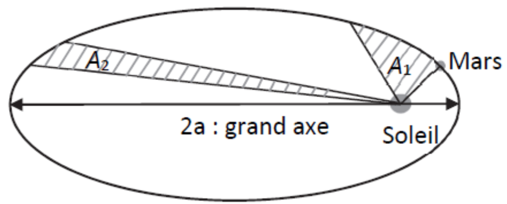
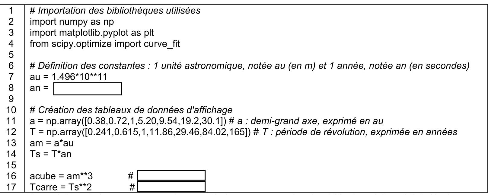
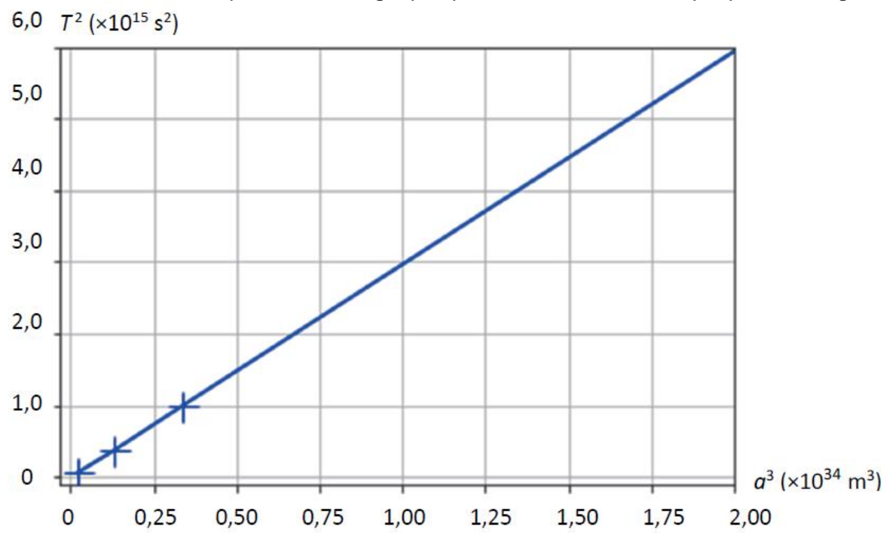
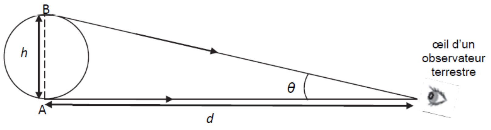
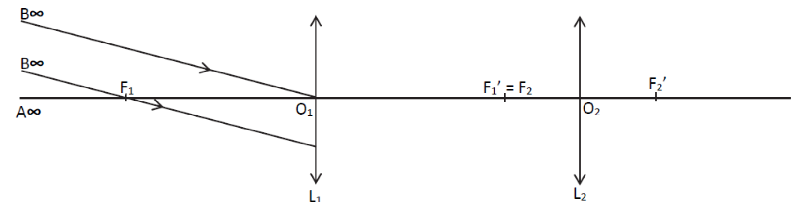

Johannes Kepler (1571-1630) est un astronome allemand connu pour
avoir établi les trois lois sui portent son nom et qui permettent
notamment de décrire le mouvement des planètes du système solaire.
On étudie dans cet exercice la troisième loi de Kepler appliquée à la
planète Mars, puis on détermine les caractéristiques d’une lunette
astronomique permettant d’observer cette planète.
Valeur de l’unité astronomique (UA) : 149597870700 m
En 1600, Kepler devient l’assistant de l’astronome danois Tycho
Brahe. Celui-ci le charge d’étudier la trajectoire de Mars et de
déterminer son orbite à l’aide des observations astronomiques et des
mesures qu’il a lui-même effectuées. Cette tâche, longue et délicate,
conduit Kepler à envisager une trajectoire elliptique pour Mars, il
publie ses deux premières lois en 1609, puis la troisième loi en
1618.
D’après La science moderne : de 1450 à 1800, de René Taton

Le référentiel d’étude est le référentiel héliocentrique supposé
galiléen : son origine est au centre du Soleil et ses axes sont fixés
par rapport aux étoiles lointaines.
Énoncer les deux premières loide de Kepler.
En exploitant la deuxième loi et le schéma de la Figure 1, justifier que le mouvement de Mars dans le référentiel héliocentrique n’est pas uniforme.
Les périodes de révolution \(T\) ’en années) et les demi-grands axes \(a\) (en unité astronomique) des trajectoires des planètes du système solaire (à l’exception de Mars) sont saisies dans un programme écrit en langage Python. Afin de vérifier la troisième loi de Kepler. Un extrait de ce programme est donné sur la Figure 2.

Le programme permet d’obtenir une représenation graphique dont un zoom est proposéen Figure 3.

Dans le tableau 1 sont regroupés les périodes de révolution (en s) et les demi-grands axes (en m) des trajectoires des plnètes du système solaire (à l’exception de Mars).
| Planète | Période de révolution \(T\) (en s) | Demi-grand axe \(a\) (en m) |
|---|---|---|
| Mercure | 7.60 × 106 | 5.79 × 1010 |
| Vénus | 1.94 × 107 | 1.08 × 1011 |
| Terre | 3.15 × 107 | 1.50 × 1011 |
| Jupiter | 3.74 × 108 | 7.78 × 1011 |
| Saturne | 9.29 × 108 | 1.43 × 1012 |
| Uranus | 2.66 × 109 | 2.87 × 1012 |
| Neptune | 5.20 × 109 | 4.50 × 1012 |
Recopier sur la copie la ligne 8 du programme et la compléter.
Proposer sur la copie un commentaire en précisant la finalité des lignes 16 et 17 du programme et les unités des grandeurs calculées.
Commenter le Figure 3 au regard des lois de Kepler.
À partir des relevés de Tycho Brahe, Kepler a pu déterminer que la période de révolution de Mars, notée \(T_{Mars}\) était de 687 jours.
Déterminer la valeur du demi-grand axe de l’orbite de Mars, noté \(a_{Mars}\), et justifier qu’elle correspond à la quatrième planète du système solaire en partant du Soleil.
En 1611, Johannes Jepler propose dans son ourvrage Dioptricae une nouvelle combinaison optique pour la lunette astronomique utilisée par Galilée en remplaçant la lentille divergente par une lentille convergente.
D’après La science moderne : de 1450 à 1800, de René Taton
Fondées sur ce modèle, les lunettes astronomiques actuelles sont formées de deux lentilles minces convergentes. On a représenté sur la Figure 5, le schéma optique d’une lunette astronomique afocale.
distance minimale entre Mars et la Terre : 62.07 × 106 km
à l’œil nu, l’angle sous lequel est vue la Lune est de 9.0 × 10−3 rad
le diamètre de Mars est de 6794 km
pour des angles suffisamment petits, c’est-à-dire très inférieurs à 1 radian, on peut écrire : \[\tan(\theta) \approx \theta \text{~ où } \theta \text{ est en radian}\]
On présente sur le schéma ci-dessous l’angle \(\theta\) sous lequel l’observateur voit un objet \(AB\) de hauteur \(h\) lorsqu’il se situe à une distance \(d\) grande devant \(h\).

Sur la Figure 5, on note \(L_1\) et \(L_2\) les deux lentilles minces convergentes. Préciser la lentille correspondant à l’objectif et celle correspondant à l’occulaire de la lunette.
On considère un objet situé à l’infini, noté \(A_{\infty}B_{\infty}\). On observe cet objet avec la lunette.
Tracer sur la Figure 5 la marche des rayons lumineux provenent de \(B_{\infty}\) à travers la lentille \(L_1\) et la lentille \(L_2\) en faisant apparaitre l’imahe intermédiaire, notée \(A_1B_1\) de l’objet \(A_{\infty}B_{\infty}\) formée par la lentille \(L_1\).
La plupart du temps, il est difficile d’observer Mars depuis la Terre, notamment à cause de sa petite taille. La situation la plus favorable est quand Mars est en opposition, c’est-à-dire alignée avec la Terre et le Soleil. Cette situation correspond au moment où Mars est au plus près de la Terre.
D’après http://www.observatoiredeparis.psl.eu
On observe Mars à l’aide d’une lunette astronomique dont les caractéristiques sont données au tableau 2.
| Distance focale de l’objectf | 900 mm |
|---|---|
| Diamètre de l’objectif | 70 mm |
| Masse du tube optique | 1.75 kg |
| Distance focale des oculaires interchangeables | 10 mm, 25 mm et 40 mm |
Représenter les angles \(\theta_{1}\) (angle sous lequel est vu Mars à l’œil nu) et \(\theta_2\) (angle sous lequel est vu Mars à l’aide de la lunette) sur la Figure 5.
On rappelle que le grossissement \(G\) de la lunette s’écrit \(G = \dfrac{\theta_2}{\theta_1}\). Établir que le grossissement s’exprime en fonction des distance focales de l’objectif et de l’oculaire notée respectivement \(f'_{obj}\) et \(f'_{ocu}\) : \(G = \dfrac{f'_{obj}}{f'_{ocu}}\).
Dans la situation où Mars est au plus près de la Terre, déterminer parmi les oculaires fournies avec la lunette décrite dans le tableau 2, celui qui permet à un observateur de voir Mars au moins aussi grosse que la Lune vue à l’œil nu.
